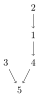

RandomForests.jl: a Julia package for Random Forests on Graphs, and Applications
What's a random forest?
The random forests produced by this package come from graph theory, and are unrelated to the random forests found in machine learning. A tree is a graph without cycles, and a forest is a set of trees. We are interested in a specific way of generating random spanning forests in a graph, because of its deep ties to the graph Laplacian.
This is an example of a graph (with a loop):

This is an example of a spanning tree for the (same) graph:

Finally, this is an example of a spanning forest:

Rooted spanning forests
Importantly, all the forests we use are considered to be rooted: each tree in the forest is directed, and all edges point towards the root of the tree. In the forest above, the roots are the nodes 5 and 3.
When we talk about a "random spanning forest", we mean a forest $\phi$ sampled from the following distribution:
where:
- $ \phi $ is a forest, viewed as a set of edges,
- $ R(\phi) $ is the number of trees in $\phi$,
- $ w_{ij} $ is the weight associated with edge (ij) (which equals 1 if the graph is unweighted)
- $ q $ is a parameter that determines the average number of trees.
- $ z $ is an integration constant.
References
Functions and types
RandomForests.next — Method.next(rf::RandomForest)Return a vector of indices v, where v[i] = j means that node i points to node j in the forest. If v[i] = 0 i is a root.
RandomForests.random_forest — Method.random_forest(G::AbstractGraph,q)Run Wilson's algorithm on G to generate a random forest with parameter "q". q determines the probability that the random walk is interrupted at a node. If q is a scalar, that probability equals q/(q+d[i]) at node i with degree d[i]. If q is a vector, it equals q[i]/(q[i]+d[i]).
Example
using LightGraphs G = grid([3,3]) random_forest(G,.4) q_varying = rand(nv(G)) rf = random_forest(G,q_varying) nroots(rf) next(rf) #who points to whom in the forest`
RandomForests.smooth — Method.smooth(g :: AbstractGraph{T},q,Y )
Smooth signal over graph. Given a vector $\mathbf{y}$ of size nv(g), compute $q(q\mathbf{I}+\mathbf{L})^{-1}\mathbf{y}$, where $\mathbf{L}$ is the graph Laplacian and q > 0 is a regularisation coefficient (the smaller q, the stronger the smoothing).
If Y is a matrix then this function computes $q(q\mathbf{I}+\mathbf{L})^{-1}\mathbf{Y}$. The linear system is solved using a direct method.
Example
g = grid([10])
t = LinRange(0,1,10)
y = sin.(6*pi*t)
smooth(g,.1,y)
smooth(g,10.1,y)LightGraphs.SimpleGraphs.SimpleDiGraph — Method.SimpleDiGraph(rf :: RandomForest)Convert a RandomForest rf to a SimpleDiGraph.
Example
g = grid([3,3])
rf = random_forest(g,.4)
f = SimpleDiGraph(rf)
connected_components(f)Base.:* — Method.*(p::Partition,Y :: Matrix)
Treating the graph partition as a linear operator, compute the average of Y over the partition.
Example
g = grid([5])
rf = random_forest(g,.5)
p = Partition(rf)
p*collect(1:nv(g))Base.:* — Method.*(rf::RandomForest,Y :: Matrix)
Treating the random forest as a linear operator, propagate the value of y at the root to the rest of the tree.
Example
g = grid([5])
rf = random_forest(g,.5)
rf*collect(1:nv(g))